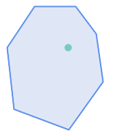
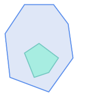
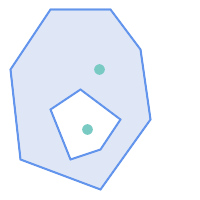
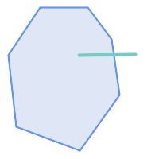

Name
ST_Contains — Bの外部にAのポイントが無く、かつAとBが内部に少なくとも一つのポイントを共有する場合にはTRUEを返します。
Synopsis
boolean ST_Contains(geometry geomA, geometry geomB);
説明
ジオメトリBが完全にジオメトリAの内部にある場合にはTRUEを返します。ジオメトリAがジオメトリBを含むのは、BのポイントがAの外部に無く、かつBの内部の少なくとも一つのポイントがAの内部にある場合に限ります。
この定義は、ジオメトリに境界が含まれていない点で微妙です。これは、ポリゴンとラインに境界であるラインとポイントを含まないことを意味します。詳細については、Subtleties of OGC Covers, Contains, Withinをご覧下さい (ST_Coversは、より包括的な関係を提供します)。しかし、ジオメトリは自身を含みます (対してST_ContainsProperlyではジオメトリは自身を正しく含むことにはなりません)。
ST_ContainsはST_Withinの逆です。つまりST_Contains(A,B) = ST_Within(B,A)となります。
![[Note]](images/note.png) | |
This function automatically includes a bounding box comparison
that makes use of any spatial indexes that are available on the geometries. インデックスの使用を避けるには |
GEOSモジュールで実現しています。
Enhanced: 2.3.0 PIP short-circuit (ポリゴンとポイントに限定した高速判定)を少ないポイントからなるマルチポイントに対応することができるよう拡張しました。以前の版ではポリゴンとポイントの組み合わせにだけ対応していました。
![[Important]](images/important.png) | |
Enhanced: 3.0.0 |
| |
この関数を不正なジオメトリで呼ばないでください。予期しない結果が返されます。 |
ご注意: これは論理値を返して整数を返さないのが「許される」版です。
 This method implements the OGC Simple Features
Implementation Specification for SQL 1.1. s2.1.1.2 // s2.1.13.3 - within(geometry B, geometry A)と同じ
This method implements the OGC Simple Features
Implementation Specification for SQL 1.1. s2.1.1.2 // s2.1.13.3 - within(geometry B, geometry A)と同じ
This method implements the SQL/MM specification. SQL-MM 3: 5.1.31
例
次に示す図全てで、ST_ContainsはTRUEを返します。

| 
|

| 
|
次に示す図全てで、ST_ContainsはFALSEを返します。

| 
|
-- 円内の円
SELECT ST_Contains(smallc, bigc) As smallcontainsbig,
ST_Contains(bigc,smallc) As bigcontainssmall,
ST_Contains(bigc, ST_Union(smallc, bigc)) as bigcontainsunion,
ST_Equals(bigc, ST_Union(smallc, bigc)) as bigisunion,
ST_Covers(bigc, ST_ExteriorRing(bigc)) As bigcoversexterior,
ST_Contains(bigc, ST_ExteriorRing(bigc)) As bigcontainsexterior
FROM (SELECT ST_Buffer(ST_GeomFromText('POINT(1 2)'), 10) As smallc,
ST_Buffer(ST_GeomFromText('POINT(1 2)'), 20) As bigc) As foo;
-- 結果
smallcontainsbig | bigcontainssmall | bigcontainsunion | bigisunion | bigcoversexterior | bigcontainsexterior
------------------+------------------+------------------+------------+-------------------+---------------------
f | t | t | t | t | f
-- ST_ContainsとST_ContainsProperlyとの違いを示す例
SELECT ST_GeometryType(geomA) As geomtype, ST_Contains(geomA,geomA) AS acontainsa, ST_ContainsProperly(geomA, geomA) AS acontainspropa,
ST_Contains(geomA, ST_Boundary(geomA)) As acontainsba, ST_ContainsProperly(geomA, ST_Boundary(geomA)) As acontainspropba
FROM (VALUES ( ST_Buffer(ST_Point(1,1), 5,1) ),
( ST_MakeLine(ST_Point(1,1), ST_Point(-1,-1) ) ),
( ST_Point(1,1) )
) As foo(geomA);
geomtype | acontainsa | acontainspropa | acontainsba | acontainspropba
--------------+------------+----------------+-------------+-----------------
ST_Polygon | t | f | f | f
ST_LineString | t | f | f | f
ST_Point | t | t | f | f